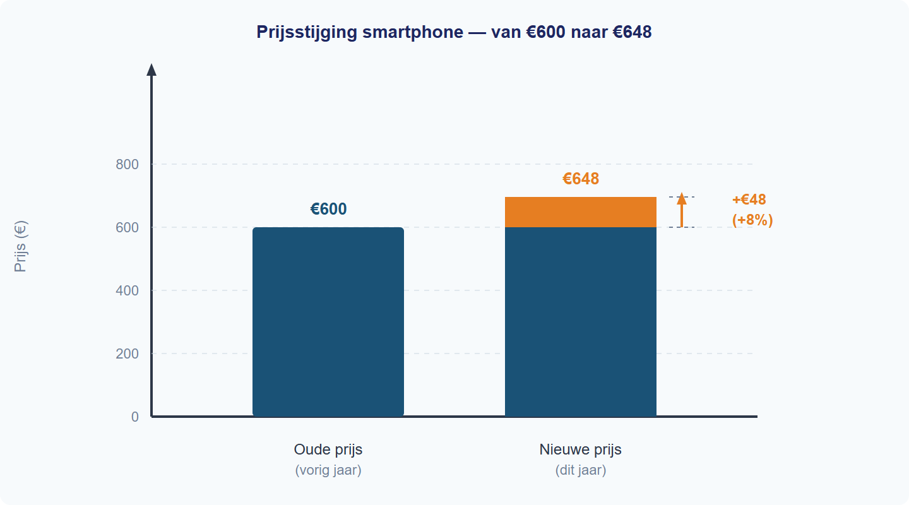
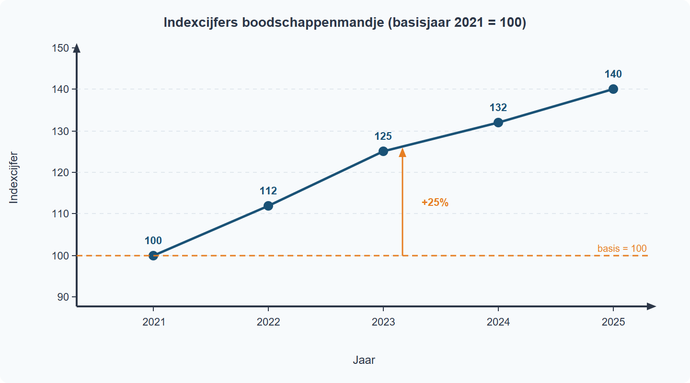

| Stap | Actie |
|---|---|
| 1 | Noteer oude waarde en nieuwe waarde |
| 2 | Bereken (nieuw - oud) / oud x 100% |
| 3 | Interpreteer positief als stijging en negatief als daling |

| Stap | Actie |
|---|---|
| 1 | Bepaal het basisjaar: index = 100 |
| 2 | Bereken waarde / basiswaarde x 100 |
| 3 | Interpreteer boven of onder 100 |

Een stijging van 125 naar 135 is 10 indexpunten. De procentuele stijging is 10 / 125 x 100% = 8%.